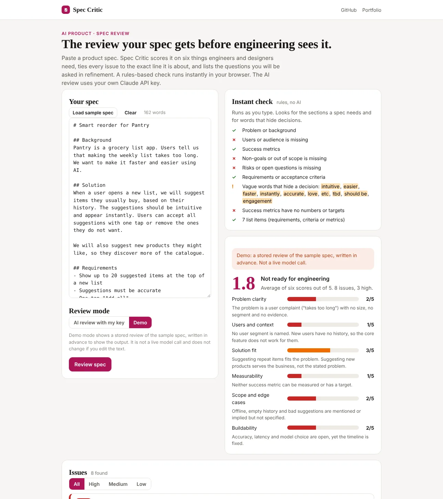

The problem
Specs reach refinement with the same gaps: no measurable metric, vague words, missing edge cases. I wanted an AI review a PM can trust, with nothing on screen that looks like evidence when it is not.

What it does
- Instant rules check for sections, vague words and metrics.
- AI review in a fixed JSON shape: scores, issues, questions, rewrite.
- Quote verification against the spec.
- Demo mode, labelled as a stored example.
Findings and decisions
Product call
Provenance over prose
An issue the reader cannot find in their own spec loses trust. So quotes are checked and flagged, not hidden.
Product call
Rules before AI
The mechanical checks run without a model, instantly and for free. The model handles judgement only.
What I would do next
- Test with my own key on real specs and report the quote match rate.
- Let users mark wrong issues to measure precision.
- Compare scores before and after edits.